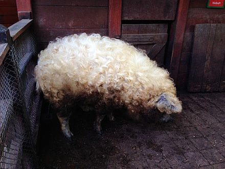
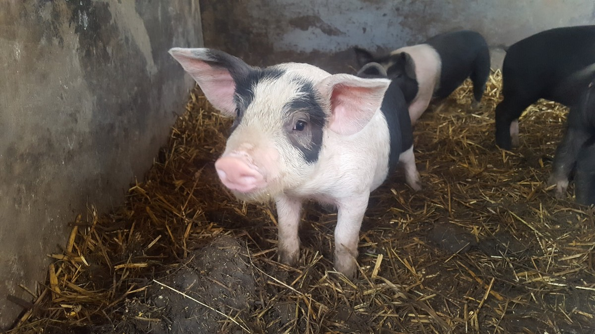
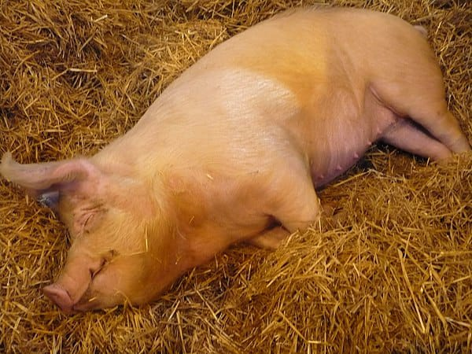
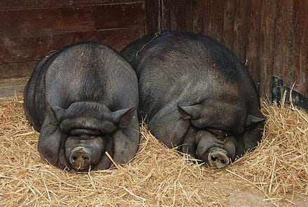
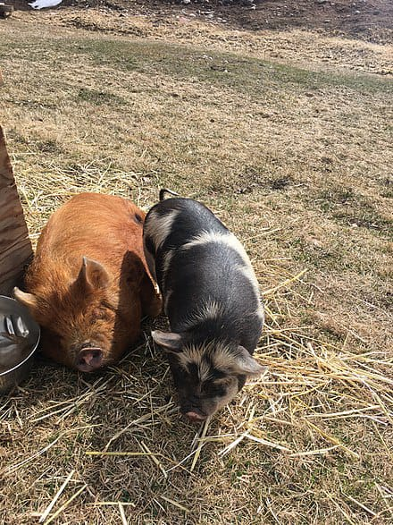
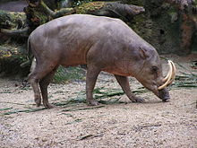
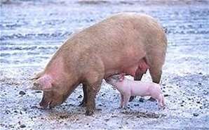
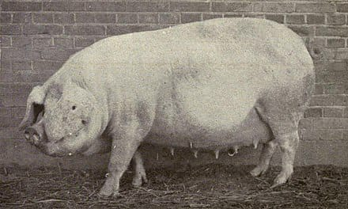

Purceii se nasc dungați. Mangalița de doi ani cântărește aproximativ 150 kg ea pe langa mai are si un strat gros de grăsime pe spate cu grosimi de 11 si 14 cm. Durată medie de viață:15-20 ani.
Purceii se nasc cu o greutate medie de 1,2 kg, la 1 lună ajung la 5,6 kg, la 2 luni – 14 kg, la 6 luni – 60-65 kg, la 1 an – 125-135 kg.Greutatea corporală la animalele adulte: 180-210 kg la scroafe și 220-240 kg la vieri.Durată medie de viață:15-20 ani;
În zootehnie, marele alb (sau yorkul mare) este o rasă de porci creată în Anglia ce aparține tipului pentru carne.Animalele din această rasă se caracterizează prin culoare albă și printr-o talie mare, putând atinge greutăți de peste 200 de kg.Are o precocitate ridicată, la vârsta de 7–8 luni atingând greutatea de 110–120 kg, cu un consum relativ redus de nutrețuri.
Greutate:mascul 50kg femela:48kg
Inaltine: mascul:36cm femela:35cm (aprox.)
 Kunekune este acoperit cu păr care poate fi lung sau scurt și drept sau creț. Culorile de păr includ negru, maro, ghimbir, auriu, crem și combinații cu pete. Are botul mediu spre scurt, ușor întors în sus, adesea negru, și urechile fie semidespicate, fie înțepate. Are un corp scurt, rotund, cu picioare scurte și poate avea două barbe (numite piri piri ) sub bărbie. Kunekune are o înălțime de aproximativ 60 cm (24 inchi). Un Kunekune adult poate cântări între 60 și 200 kg (130 și 440 lb), masculii fiind considerabil mai grei decât femelele.
Babirusa din Sulawesi de Nord are o lungime a capului și a corpului de 85–110 cm (33–43 inchi) și cântărește până la 100 kg (220 lb). Este practic fără păr (își dezvăluie ușor pielea cenușie), iar coada-smoc este, de asemenea, aproape fără păr. La masculi, caninii superiori relativ lungi și groși sunt puternic curbați.
Porcul este omnivor, putând fi hrănit atât cu furaje de origine animală, cât și vegetală. Gestația la scroafe durează intre 112-114 de zile. Durata naturală de viață a porcului este de aproximativ 12 ani. Îngrijirea porcilor se realizează prin oferirea unui mediu curat și spațios este crucială pentru buna creștere a porcilor. Adăposturile bine ventilate și adăposturile exterioare le asigură confortul necesar. De asemenea, monitorizarea stării de sănătate, vaccinarea regulată și gestionarea corespunzătoare a deșeurilor sunt aspecte esențiale ale îngrijirii porcilor.
Desi, in general, porcii nu sunt asa de prietenoși ceea ce priveste adapostirea, totusi pentru o crestere si dezvoltare normala ei necesita un mic comfort
Adaposturile pentru porcine
Constructiile de adapost porci in gospodarii pot fi destinate pentru a participa direct in procesul de productie.
Adaposturile sau cotetele trebuie sa fiu asigurate important cu:
-apa
-mâncare
-și un teren spatios
Adapostul pentru porci in gospodarie pot fi destinate pentru a participa direct in procesul de productie :maternitate, cresa, tineret, ingrasare. sau pentru a sprijini procesul de productie :
filtru sanitar, atelier mecanic, abator etc:
Reguli de luat
-Adaposturile trebuie sa asigure o buna capacitate de adapostire pentru animale
- Apoi, sa permita folosirea intensiva a spatiului. construit pentru cresterea unui numar mare de animale pe unitate de suprafata
- Sa asigure conditii pentru realizarea unei productii maxime de carne
Adaposturile pentru trebuie sa fiu rezistente la actiunea de ramat, scormonit, la calcat si se poata spala cu jet de apa apoi cu o dezinfectare eficienta.
Dimensiunile adaposturilor trebuie sa permita porcilor sa fiu
-liberi
-sa permita miscarea pentru activitatile musculare.
Foloase Porcul are 60-200 kg și 40-60cm inaltime. Ei poate trăi între 20-25 ani. Specia de porc care are cea mai bună carne se numește Landrece. Rasa de porc Landrece a fost formata în Danemarca în (1850-1907). Ei ne pot da: jumări, șorici, carne, slănină.
Videoclip cu cateva
informatii din proiect
BIOGRAFIA
LUI
PAUNA DAVID
BIOGRAFIA
LUI
FUSARU GABRIELA
BIOGAFIA
LUI
TUDOSE SOFIA
BIOGRAFIA
LUI
PAVEL DAVID